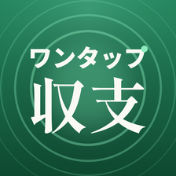
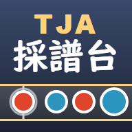

アプリ
ワンタップ収支
パチンコ・パチスロの収支を、打ち終わったその場でひと押し記録する収支帳です。店・機種・タグ別の集計で、どこで勝てて、どこで負けているかがひと目でわかります。
- App Store は準備中です
- プライバシーポリシー

ツール
TJA採譜台
曲を聞きながら叩いて、太鼓さん次郎などで遊べる譜面（TJA）を作るツールです。自動で譜面を作ることもできます。「太鼓の達人」シリーズの非公式なファンメイドツールです。
ひとりで、ゲームやアプリを作っています。

アプリ
パチンコ・パチスロの収支を、打ち終わったその場でひと押し記録する収支帳です。店・機種・タグ別の集計で、どこで勝てて、どこで負けているかがひと目でわかります。

ツール
曲を聞きながら叩いて、太鼓さん次郎などで遊べる譜面（TJA）を作るツールです。自動で譜面を作ることもできます。「太鼓の達人」シリーズの非公式なファンメイドツールです。